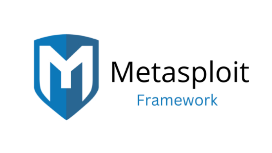
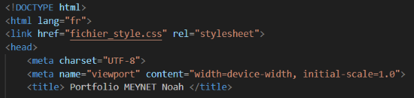
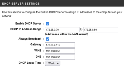

Techniques
Cybersécurité
Compétence abordée dans les scéances de TP et TD de Pentest et de Cyber
En cours de Pentest, j’ai appris à exploiter diverses machines virtuelles dans le but de monter en privilèges sur chacune
d’entre elles. Pour ce faire, j’ai travaillé sur des environnements spécifiques comme Academy, Dev ou Butler. Ces exercices m’ont
permis d’utiliser différents outils spécialisés tels que Metasploit, Hydra ou encore Dirb, qui jouent chacun un rôle clé dans l’identification
et l’exploitation des vulnérabilités. Concernant l’avancement de ce travail, je pense avoir acquis une bonne compréhension des techniques
essentielles, bien que je continue à perfectionner mes compétences dans l’analyse et l’utilisation d’outils avancés.
75 %

Programmation Web
Compétence abordée dans les scéances de TP et TD de Programmation
En cours de Programmation Web, j’ai appris à coder une page web qui me sert de Portfolio.
Pour réaliser cela, j’ai eu recours à deux langages informatiques qui sont respectivement le HTML et le CSS.
Le langage HTML a pour fonction de mettre en forme le contenu de la page web tandis que le langage CSS sert à modifier la mise
en forme de la page. Pour ce qui est de l’avancement de ce travail, je pense me situer à 70 % car la page web n’est pas encore aboutie,
en particulier à cause du manque d’illustration contenue dans le Portfolio.
70 %

Réseaux
Compétence abordée dans les scéances de TP et TD de Réseaux
Pour prendre un exemple, durant une séance de TP de Réseaux, j’ai appris à configurer un
point d’accès Wifi, c’est-à-dire lui attribuer une adresse IP et paramétrer ses différents protocoles.
Nous avons par exemple mis en place le protocole DHCP qui a pour fonction d’attribuer une adresse IP à tout appareil
se connectant sur le réseau, tout cela à partir de l’interface graphique du point d’accès.
Cela m’a permis de perfectionner mes bases en adressage IP et d’appliquer la partie théorique apprise dans les cours magistraux.
J'estime avoir répondu aux différentes instructions du TP, je pense donc avoir avancé ce travail à hauteur de 85 %.
Télécharger le compte-rendu de mon TP
85 %

Télécommunications
Compétence abordée dans les scéance de TP et TD de Télécommunications et d'Electronique
De plus, en TP de Télécommunications, j’ai effectué diverses mesures et calculs à propos des canaux de la T.N.T dans le but
d’évaluer la qualité du signal. Pendant ce travail que j’ai réalisé en binôme, j’ai appris à configurer le matériel qui était à
notre disposition et j’ai relevé différentes données comme la fréquence ou encore le rapport puissance à bruit de chaque canal.
Concernant le résultat de ce travail, j’estime l’avoir complété à 80 % par rapport aux attendus de l’enseignant,
même si, question de temps, mon camarade et moi n’avons pas pu finir ce TP.
80 %
Téléphonie
Compétence abordée dans les scéances de TP et TD de Téléphonie
Lors de plusieurs scéances de TP de Téléphonie en binôme, j'ai pu configurer des téléphones IP
avec OpenScape afin de développer des compétences techniques en réseaux et en VoIP, ainsi que des compétences en résolution
de problèmes. De plus, j'ai eu l'opportunité d'étendre mes compétences en ajoutant des fonctionnalités telles que la messagerie
ou en configurant le serveur pour permettre la communication avec l'extérieur. Cette expérience sera précieuse dans ma carrière future en
technologie de l'information et des communications. Pour ce qui est du résultat de ce travail, j'estime l'avoir completé à 80 % car je n'ai
pas pu terminer la rédaction de mon compte-rendu.
Télécharger le compte-rendu de mon TP
80 %
Qualités
- Responsable
Grâce à mon travail d'entraineur de badminton, j'ai développé le sens des responsabilités comme la gestion du matériel,
le rangement de la salle ou encore l'encadrement des enfants.
- Motivé
Je suis toujours excité dès que je suis face à un nouveau projet ou challenge car j'aime sortir de ma zone de confort et étendre mes compétences.
- Digne de confiance
Je respecte toujours la vie privée des autres et je comprends à quel
point il est important de s'abstenir de parler d'informations commerciales confidentielles.
Langues
- Anglais
80 %
- Espagnol
70 %